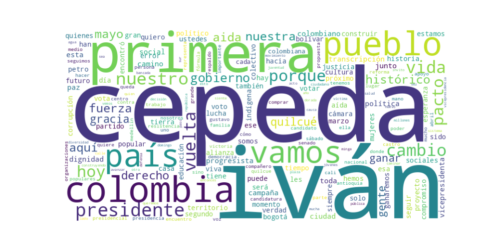

Seguidores: 481,230
Fecha de Análisis: Abril 2026
Período Cubierto: Publicaciones previas y posteriores a las elecciones legislativas del 8 de marzo, en el marco de la campaña presidencial 2026.
El candidato exhibe un estilo de comunicación híbrido, combinando un discurso político estructurado y programático con un lenguaje cercano y coloquial dirigido a las bases populares. En publicaciones oficiales y discursos, adopta un tono formal, propositivo y fundamentado en argumentos (ej. presentación de propuestas anticorrupción o de reforma agraria). Sin embargo, en formatos como videos en terreno, entrevistas rápidas o mensajes para redes, se muestra informal, accesible y empático, utilizando modismos locales (ej. "parce", "mi hermano", "¿cierto?"). Este enfoque busca conectar emocionalmente con un electorado amplio, priorizando la claridad y la identificación popular sobre un lenguaje técnico o elitista.
El tono predominante es esperanzador y propositivo, proyectando un futuro de "dignidad" y "justicia" alcanzable con su elección. Simultáneamente, es crítico y confrontacional hacia sus opositores políticos, a quienes retrata como representantes del "pasado", la "corrupción" y el "odio". Existe un fuerte componente movilizador y de lucha, que llama a la acción ("ganar en primera vuelta") y a la defensa colectiva de lo alcanzado. La combinación genera un relato de "nosotros" (el pueblo diverso, digno) versus "ellos" (la oligarquía corrupta).
La estrategia de comunicación del candidato está diseñada para consolidar y expandir la base electoral del progresismo colombiano. Se dirige principalmente a las bases urbanas y rurales del Pacto Histórico, a los votantes desencantados con la política tradicional, y a los sectores históricamente excluidos (indígenas, afros, jóvenes, mujeres, LGBTIQ+), ofreciéndoles representación simbólica y concreta (ej. fórmula vicepresidencial indígena). Busca evocar un sentimiento de pertenencia a un proyecto histórico colectivo que está bajo amenaza, transformando el voto en un acto de defensa y continuación de un "cambio" que se presenta como irreversible. Su discurso combina la pedagogía de logros gubernamentales, la denuncia del adversario y una potente narrativa de futuro inclusivo, todo articulado en torno a la urgencia táctica de lograr una victoria en primera vuelta el 31 de mayo.
Reporte de Análisis Estratégico: Comunicación Digital del Candidato Iván Cepeda
1. Resumen del Patrón de Éxito: El éxito de su contenido se basa en una fórmula de movilización emocional y confrontación épica. No se trata de propuestas técnicas, sino de un discurso que enmarca la elección como una batalla histórica entre "el pueblo despierto" y las élites del pasado. Combina un tono de resistencia valiente con una apelación directa a la memoria histórica y al dolor colectivo, transformando el acto electoral en un deber moral de continuidad y vindicación.
2. Tácticas de Comunicación Clave: * Narrativa de la Continuidad y la Batalla Epica: El discurso se construye como la segunda parte de una historia. Se presenta a sí mismo como el heredero natural y defensor del "primer gobierno progresista" (Petro), y enmarca la contienda como la defensa de ese legado frente a una "extrema derecha" que quiere hacer "volver al pasado". La elección es el "segundo gobierno progresista", no una opción nueva. * Construcción de un "Nosotros" Víctima y Valiente: Crea una identidad colectiva poderosa. El "nosotros" son "sobrevivientes", gente de "temple firme" forjada en "mil luchas", que ha cultivado "trabajo honesto" y ha sufrido "abusos". Esto genera un profundo sentido de pertenencia y resistencia compartida entre su base. * Personalización del Conflicto y la Amenaza: La confrontación no es abstracta. Se nombra al adversario ("extrema derecha", "Petro, suficiente") y se personaliza la amenaza, mencionando incluso "planes criminales" en su contra conocidos por inteligencia extranjera. Esto eleva los riesgos y justifica el tono de lucha. * Conexión Emotiva a través de Símbolos y Memoria: Utiliza figuras icónicas del movimiento progresista (como Lucas Villa) como símbolos del sacrificio y la juventud que "no calla". Esto trasciende la política cotidiana y la conecta con una lucha por la dignidad y la memoria, apelando a un sentimiento de justicia pendiente.
3. Temas de Mayor Resonancia: * La defensa y continuidad del gobierno de Gustavo Petro: Es el núcleo duro. "Segundo gobierno progresista" es el eslogan operativo. * La lucha contra la "extrema derecha" y el "pasado": La polarización como motor de movilización. * La memoria de las víctimas y la defensa de la dignidad: Personificada en líderes sociales y figuras como Lucas Villa. * La denuncia de persecución política y planes en su contra: Refuerza la narrativa de mártir/defensor. * La esperanza de victoria en primera vuelta: Mensaje de fuerza y momentum imparable ("31 de mayo").
4. Perfil de la Audiencia Implícita: Habla primordialmente a su base electoral más leal y movilizada: aquellos que ya votaron por Petro y se identifican con la narrativa del "Pacto Histórico". El lenguaje es de trinchera, de consolidación, no de persuasión de indecisos. También apela específicamente a jóvenes idealistas y a organizaciones sociales que valoran la defensa de los DDHH y la memoria histórica. La mención constante de "juventud", "artistas", "activistas" y "organizaciones sociales" lo delata.
5. Conclusión Estratégica: La clave fundamental de su poder discursivo es la transformación del acto político en un acto de identidad y redención colectiva. Su discurso no vende gestión, vende pertenencia a una comunidad épica que está "despierta" y en lucha permanente. Lo que lo hace potente y diferente del discurso político tradicional es que opera en el registro mítico y emocional, no en el racional-programático. No convence con datos, moviliza con símbolos, memoria y una narrativa clara de "nosotros vs. ellos" cargada de significado histórico. Su mayor fortaleza es la conexión emocional profunda con una base que se ve reflejada en su historia de resistencia, pero su limitación estratégica es que este discurso tan identitario probablemente no expande su techo electoral fuera de ese núcleo ya convencido.

Caption: No volveremos al pasado @ivancepedacastr presidente #gustavopetro #pactohistórico #cepeda #pereira
Likes: 5,396 | Comentarios: 450 | Reproducciones: 43,988
Ver en InstagramCaption: El Pacto es con la vida.
Likes: 5,343 | Comentarios: 265 | Reproducciones: 45,303
Ver en InstagramCaption: ✊🏾🇨🇴Somos hombres y mujeres valientes, de temple firme, forjado en las mil luchas que nos han quitado el miedo. No hay planes siniestros ni amenazas suficientes capaces de frenar el segundo gobierno progresista de Colombia. Ganaremos en primera vuelta el próximo 31 de marzo. #ElPoderDeLaVerdad #IvanPresidente #IvánNosUne
Likes: 18,009 | Comentarios: 922 | Reproducciones: 153,661
Ver en Instagram